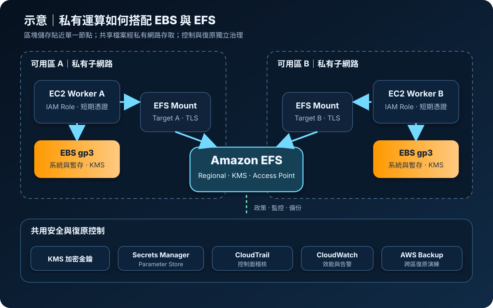

Amazon EBS 與 EFS：區塊與共享檔案儲存
EBS 提供通常掛載給單一運算執行個體的持久區塊裝置；EFS 提供可由多個運算資源透過 NFS 共同存取的受管檔案系統。兩者不是容量大小的選擇，而是存取模型、效能、可用性與安全邊界的選擇。
作者：Dr. William｜查閱與發布：2026-08-29
服務定位
Amazon Elastic Block Store（EBS）為 EC2 提供持久區塊儲存。作業系統把 EBS Volume 視為磁碟，可建立檔案系統、資料庫資料檔或開機磁碟。Volume 位於單一可用區；一般情況同一時間掛載到一個執行個體，特定 io1/io2 類型可在支援的情況使用 Multi-Attach，但應用程式必須能協調並行寫入。
Amazon Elastic File System（EFS）是彈性、受管的 NFS 檔案系統，可讓同一區域內多個 EC2、ECS 或 Lambda 工作負載共享目錄與檔案。Regional 類型跨多個可用區儲存資料；One Zone 類型成本較低，但容錯範圍限於單一可用區。
核心概念
EBS
- Volume：獨立於 EC2 生命週期的區塊裝置，刪除行為需明確設定。
- Volume type：gp3 適合一般用途；io2 對持續高 IOPS 與低延遲需求；st1、sc1 適合特定循序吞吐工作。
- Snapshot：儲存在 Amazon S3 基礎設施中的增量時間點備份，可跨區複製及建立新 Volume。
- 效能：容量、IOPS、吞吐、執行個體頻寬與工作負載 I/O 模式共同決定結果。
EFS
- Mount target：在各可用區子網路提供 NFS 網路端點，由 Security Group 控制 TCP 2049。
- Access Point：為應用程式固定根目錄與 POSIX 身分，減少共用檔案系統的權限混用。
- 效能與吞吐：效能模式、吞吐模式與工作負載並行度影響延遲及總吞吐。
- Storage class：Standard、Infrequent Access 與 Archive 可搭配 Lifecycle Management 移動低頻資料。
適合與不適合的使用情境
適合 EBS
- EC2 開機磁碟、單機應用程式資料、交易式資料庫及需要穩定 IOPS 的區塊工作負載。
- 需要由 Snapshot 建立可測試、可複製的時間點復原資料。
不適合 EBS
- 大量主機跨可用區同時掛載同一檔案樹；EBS 的可用區與掛載模型不等同共享 NAS。
- 只需儲存大量靜態物件、資料湖或公開內容；S3 通常更符合物件 API、耐久性與成本模型。
適合 EFS
- 多台 Linux 運算資源共享網站內容、模型檔、套件、使用者目錄或批次處理輸入輸出。
- 容器或 Lambda 需要持久、可伸縮且具目錄語意的共用 NFS 儲存。
不適合 EFS
- 需要 Windows 原生 SMB 語意、極低延遲區塊 I/O，或應用程式無法容忍網路檔案系統延遲。
- 未測試檔案鎖定、權限、許多小檔案或 metadata 密集行為，就直接把本機磁碟工作負載搬入。
示意故事案例：跨可用區影像處理
以下為架構示意，不代表特定組織或正式部署。一個醫療影像去識別化平台在兩個私有子網路執行 EC2 Worker。每台 Worker 的作業系統與暫存處理區使用加密 EBS gp3；待處理規則、共用模型及輸出交換目錄位於 Regional EFS。工作角色以短期憑證讀取必要的 KMS 與 Secrets Manager 資源，EFS Access Point 將 Worker 限制在指定目錄。AWS Backup 建立 EBS Snapshot 與 EFS Recovery Point，CloudTrail 記錄控制面異動，CloudWatch 監控效能、容量與備份失敗。

建置與運作流程
- 定義需求：先列出區塊或檔案介面、共享範圍、延遲、IOPS、吞吐、容量、RTO、RPO、資料分類及區域限制。
- 選擇拓撲：EBS 與 EC2 放在相同可用區；EFS Regional 在實際使用的各可用區建立 Mount Target，路由維持私有。
- 建立身分控制：部署人員使用 MFA 與短期憑證；服務角色只取得必要 API。EFS 搭配檔案系統政策、Access Point 與 POSIX 權限。
- 設定加密與機密：建立時啟用 KMS 加密，規劃金鑰政策與輪替。掛載參數、資料庫密碼等機密放入 Secrets Manager 或 Parameter Store，不寫入映像、User Data 或日誌。
- 限制網路：EFS Mount Target 的 Security Group 僅允許核准來源連入 NFS 2049；不建立非必要公開路徑。EBS API 存取可透過 VPC Endpoint 與 Endpoint Policy 收斂。
- 格式化與掛載：使用檔案系統 UUID、EFS mount helper 與傳輸中 TLS；測試重開機、故障切換、鎖定及權限行為。
- 監控與備份：CloudWatch 追蹤 EBS queue、延遲、IOPS、吞吐，以及 EFS burst、吞吐與用量；CloudTrail 記錄建立、掛載設定、政策與 Snapshot 異動。AWS Backup 依資料分級排程並隔離 Backup Vault。
- 復原驗證：實際由 Snapshot 與 Recovery Point 還原，驗證應用一致性、權限、KMS 金鑰、跨區副本及 RTO/RPO。
成本與可用性考量
EBS 依佈建容量計費，部分類型另計 IOPS 或吞吐；Snapshot 依實際儲存資料量計費，跨區複製與資料傳輸會增加成本。gp3 可分開調整容量、IOPS 與吞吐，避免以擴充容量換取不需要的效能。閒置 Volume、過量 Snapshot 與未使用快照副本應納入生命週期治理。
EBS Volume 的資料在單一可用區內複寫以保護元件故障，但可用區中斷仍需要以 Snapshot、跨區複製、應用層複寫或多可用區服務處理。Snapshot 不是資料庫一致性的自動保證；有狀態應用應協調 flush、freeze 或原生備份。
EFS 依儲存量、儲存類別、吞吐模式及資料存取計費。Lifecycle Management 可降低冷資料成本，但 IA/Archive 的存取費與延遲需納入。Regional 類型提供多可用區韌性；One Zone 不應承載無其他副本且不能重建的關鍵資料。跨區災難復原需另外配置 EFS Replication 或備份複製，並定期演練。
特有資安風險與控制
- 未加密或金鑰失效：建立 EBS/EFS 時啟用 KMS；金鑰政策採最小權限，防止未授權停用、排程刪除或跨帳號使用。加密預設值不能取代金鑰治理。
- EBS Snapshot 外洩：Snapshot 分享、複製與公開設定可暴露完整磁碟。以 Service Control Policy、IAM 條件、AWS Config 與 CloudTrail 限制並偵測分享；複製前確認目的地 KMS 權限。
- Volume 殘留與錯誤掛載：EC2 終止後的 Volume 可能保留敏感資料。建立資產標籤、刪除政策、孤兒 Volume 告警及核准銷毀程序；掛載前驗證 Volume 身分與來源 Snapshot。
- EFS NFS 橫向存取：過寬 Security Group、檔案系統政策或 POSIX 模式會讓其他工作負載讀寫資料。每層均採拒絕預設，只開放核准來源，使用 Access Point 隔離目錄，掛載時啟用 IAM authorization 與 TLS。
- Root 權限與身分混淆：NFS client root 不應被視為可信邊界。EFS 政策限制 ClientRootAccess，Access Point 強制 UID/GID 與根目錄；容器採非 root 執行並限制主機掛載。
- 勒索與誤刪：線上儲存不是備份。AWS Backup Vault 使用 Vault Lock 或適當不可變控制，備份角色與工作角色分離；保留跨帳號或跨區副本並測試還原。
- 監控盲點：CloudTrail 主要記錄控制面 API，不等同完整檔案內容存取稽核。應用程式需記錄必要檔案操作與關聯識別，並避免記錄敏感內容；CloudWatch 告警異常 I/O、容量、掛載與備份狀態。
共同責任邊界
AWS 負責資料中心、實體媒體、基礎網路、虛擬化層及 EBS/EFS 受管服務基礎設施的安全與維護。客戶負責資料分類、EBS/EFS 選型、作業系統與檔案系統、修補、IAM 最小權限、MFA 與短期憑證、Security Group 與網路隔離、公開與跨帳號存取、KMS 金鑰政策、Secrets Manager/Parameter Store、POSIX 權限、EFS 政策與 Access Point、CloudTrail/CloudWatch、資料一致性、備份、保留及跨區復原。AWS 提供耐久與備份能力，不會代替客戶定義業務可接受的 RTO/RPO。
上線前可執行檢查清單
- □ 已用實際 I/O 測試確認選擇 EBS 或 EFS，而非只比較容量價格。
- □ 管理者使用 MFA 與短期憑證；EC2、容器與 Lambda 角色符合最小權限，未保存長期 Access Key。
- □ EBS 與 EFS 建立時已啟用核准 KMS 金鑰，金鑰政策、停用與刪除告警完成。
- □ EBS Snapshot 分享被限制並持續偵測；孤兒 Volume 與過期 Snapshot 有處理流程。
- □ EFS Mount Target 位於私有子網路，TCP 2049 僅接受核准 Security Group，沒有非必要公開存取。
- □ EFS 政策、Access Point、POSIX UID/GID 與 ClientRootAccess 已用允許及拒絕案例測試。
- □ EFS 掛載使用 TLS；應用機密存於 Secrets Manager 或 Parameter Store，設定與日誌不含憑證或敏感資料。
- □ EBS IOPS、吞吐與佇列，以及 EFS 吞吐、連線、容量與費用已有 CloudWatch 儀表板和告警。
- □ CloudTrail 涵蓋 Volume、Snapshot、檔案系統、政策與 Access Point 異動，稽核紀錄受保護。
- □ AWS Backup 計畫、Vault 權限、保留、不可變需求、跨帳號或跨區副本符合資料分級。
- □ 已從備份執行還原，驗證應用一致性、權限、KMS 相依性及 RTO/RPO。
AWS 官方一手來源
- Amazon EBS User Guide｜What is Amazon EBS?（查閱：2026-08-29）
- Amazon EBS User Guide｜Amazon EBS volume types（查閱：2026-08-29）
- Amazon EBS User Guide｜Amazon EBS snapshots（查閱：2026-08-29）
- Amazon EBS User Guide｜Amazon EBS encryption（查閱：2026-08-29）
- Amazon EFS User Guide｜What is Amazon EFS?（查閱：2026-08-29）
- Amazon EFS User Guide｜Security considerations（查閱：2026-08-29）
- Amazon EFS User Guide｜Working with Amazon EFS access points（查閱：2026-08-29）
- Amazon EFS User Guide｜Data encryption in Amazon EFS（查閱：2026-08-29）
- AWS Backup Developer Guide｜What is AWS Backup?（查閱：2026-08-29）
- AWS｜Amazon EBS pricing（查閱：2026-08-29）
- AWS｜Amazon EFS pricing（查閱：2026-08-29）
- AWS｜Shared Responsibility Model（查閱：2026-08-29）
內容說明
本文依查閱日可用的 AWS 官方文件整理，作為基礎學習與架構討論材料；實際部署仍須依區域支援、最新價格與配額、工作負載測試、組織政策、法規及風險評估調整。